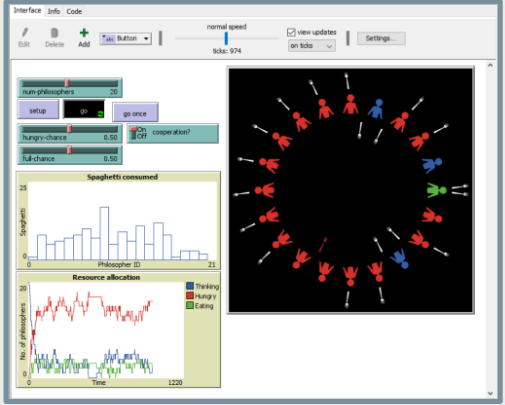

Home
Portfolio
About Me
APCSP Portfolio
Ice Cream Maker!!
This is my first project in the CSP class. The game functions as an
Ice cream Shop and thus allows the user to choose a variety of flavors
to make an Ice Cream from. This also utilizes the current turtle methods
for example trtl.goto and such. This also utilizes while and if statements, but does
not utilize the definition functions yet. Overall, this is a simple ice cream maker game that allows the user to simulate ordering an ice cream from an ice cream parlor.
Two player Game!!
This is a 2 player tag game where blue is it and green is the runner, the goal is for blue to touch green in a 1 min timer on a randomly generated map. We utilized math
functions like dx and dy to allow for smoother movement. We made a 3 second grace period to remove tag backs when collided, and we also utilized a terminal score keeper to check score. We also utilized loops and game loops to allow for continous functions in the end.
Over all its a simple tag player game and its quite smooth
JetPack Joyride!!!

This is a scratch remake of the popular Jetpack Joyride. We utilized inputs tp move the character up and down, zappers and missles for events when the two sprites touch, animation while using two costumes, we used multiple backgrounds, one for the begenning and one for the end, and an third one for the ending of the game. Overall it was a pretty good remake, and if we had more time we would have added powerups
a pHishy Fish Tank!!!!

This was a cyber security project. We simply looked for clues of a security breach, fixed it with using a debugger and other de bugging methods given to us by pltw. We fixed the errors in the code, after decrypting the key piece to run all the code. Ultimately, after some tweaking the code worked as needed, making the ph lvls temperature, etc all be connected to the values.

The simulation was a correlation between thought and energy consumption. The visuals, which included dark patches, humonid jpgs, forks, etc, were used to show a depcition of thought vs consumption of energy through food. The simulation allowed us to see a direct correlation between thinking time and energy needed.
.jpg)
The data, accorinding to wind, angle of wind, sound, temperature, light, was used to determine rover location. We determined the rover was most likely in the rocky mountains due to intense light changes and temp changes, the consistent angle of wings etc.